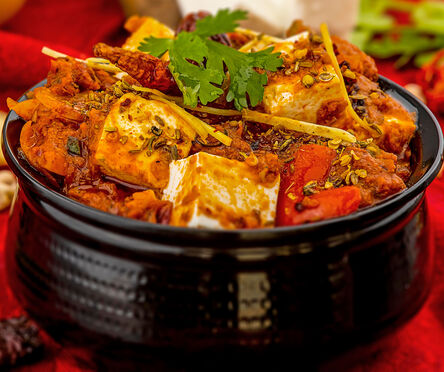

Restaurant Style Paneer Butter Masala

Description
Paneer Butter Masala, also known as butter paneer,
is one of India's most beloved and iconic vegetarian dishes.
Originating from North Indian cuisine, this dish features soft,
pillowy cubes of fresh paneer (Indian cottage cheese) simmered
in a rich, velvety, mildly sweet, and spiced tomato-butter gravy.
Its signature luscious texture and harmonious balance of tanginess
and warmth make it a staple at celebrations, dinner parties, and restaurants
worldwide.
Ingredients
- 250 grams of fresh paneer, cut into neat, bite-sized cubes.
- 4 large, ripe red tomatoes, roughly chopped.
- 2 medium onions, finely sliced.
- 10 to 12 raw cashew nuts, soaked in warm water for 15 minutes to soften.
- 1 tablespoon ginger-garlic paste.
- 3 tablespoons unsalted butter (plus an extra tablespoon for finishing).
- 2 tablespoons heavy whipping cream or fresh heavy cream.
- 1 tablespoon oil (to prevent the butter from burning).
- 1 teaspoon Kashmiri red chili powder (for that vibrant restaurant-style color without excessive heat).
- 1 teaspoon garam masala powder.
- 1 tablespoon dried fenugreek leaves (kasuri methi).
- 1 teaspoon sugar or honey (to balance the natural acidity of the tomatoes).
- Salt to taste and 1 cup of filtered water.